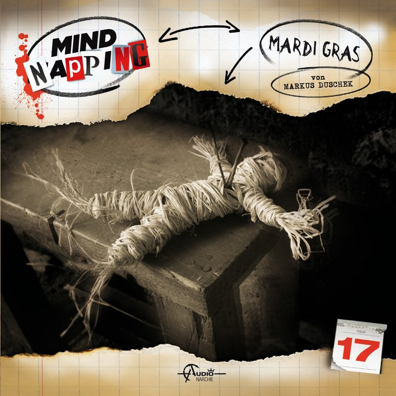

© Audionarchie
Zombies, lebende Leichen - nur ein Mythos? Ein Foto, das ihre tödlich verunglückte Geliebte Camille scheinbar lebendig zeigt, lockt die exzentrische Künstlerin Barbara Knox nach New Orleans...ein drückend heißer Hexenkessel im Ausnahmezustand: Es ist Mardi Gras. Mitten im brodelnden Partytreiben nimmt Barbara die Spur auf und kommt dabei einem psychopathischen Mörder, der seinen Opfern das Herz aus dem Leib schneidet, gefährlich nahe. Die Polizei misstraut ihr und nimmt sie ins Visier. Jetzt muss Barbara nicht nur um ihr Leben fürchten, sondern auch noch ihre Unschuld beweisen und gerät dabei in einen Strudel aus Voodoo und dunklen Leidenschaften, dem sie sich nicht mehr entziehen kann...
von Markus Duschek
Sprecher Katja Brügger, Udo Schenk, Katharina von Keller, Alexandra Doerk, Detlef Bierstedt, Gordon Piedesack, Jan Spitzer, Uve Teschner, Arianne Borbach, Kerstin Draeger, Alexander Kruuse Mettin
1 Audio CD